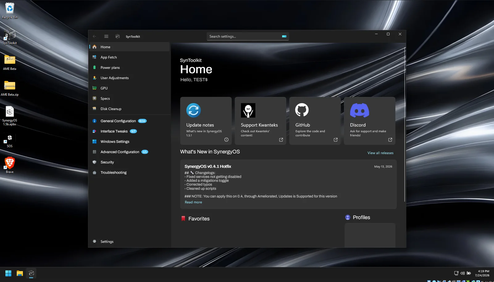

Performance tuning
Scheduler, memory, and related tweaks aimed at responsiveness. Results vary by hardware.
SynergyOS is an AME Wizard playbook that removes bloat, cuts telemetry, and applies optional tweaks. SynToolkit is the WinUI 3 app that sits on top of it.
Only numbers we can point to. No invented benchmarks.
Concrete options. You choose most of them during setup.
Scheduler, memory, and related tweaks aimed at responsiveness. Results vary by hardware.
Telemetry and advertising IDs reduced at the source. Not a guarantee of total anonymity.
Removes unused inbox apps and services. Keep Store, Xbox, or Defender if you want them.
Opinionated defaults with checkboxes for the rest. You decide what stays.
Applied through AME Wizard on a stock ISO. No custom image rebuild required.
Common Visual C++ and DirectX runtimes so games do not fail on first launch.
Mitigations, UAC, and VBS toggles exist — off by default. See the risk notes on the SynergyOS page.
Live hardware dashboard, tweak toggles, and utilities on Windows 10 and 11.
Qualitative differences today. Measured figures are placeholders until we publish our own tests.
TODO: fill with my measured values — do not publish invented FPS or RAM numbers.
WinUI 3 app for Windows 10 and 11 with a live hardware dashboard, real-time graph, and collapsible sidebar. GPL-3.0.

Issues and pull requests welcome. Read the repo docs before large changes.
Support, releases, and videos from Kwanteks.
Owners & developers below. We appreciate every contributor who helps — their work shows up on GitHub.
Owner & Developer
Owner & Developer
Thank you to everyone who has contributed. Graphs below are live from GitHub.